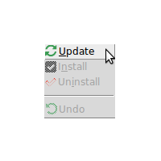

Plugin manager
This page aims to introduce you to the usage of Scipion Plugin Manager, which is a friendly application to manage everything related to the installation of the Scipion plugins.
Where is it?
After launching Scipion from the command line ( ./scipion ) we will
see the project manager window. Here we click on the Configuration menu
to select the Plugins option (Figure 1).

Fig. 38 Scipion projects manager
Figure 1. Scipion project manager
Plugin manager window
Now you will see the Plugin Manager interface (Figure 2).
Fig. 39 Plugin manager GUI
Figure 2. Plugin manager
On the left we can see the list of all available plugins. The top right panel displays information for the selected plugin loaded from Pypi, such as name, version, release date, plugin description, url and the authors.
Installing plugins
At the beginning, all plugins are uninstalled and appear with the
UNINSTALLED icon (  ). If you want to install any
plugin, you need to do the following two steps.
). If you want to install any
plugin, you need to do the following two steps.
Step 1: Check the selected plugin
We have two options:
Click on the UNINSTALLED icon
 .
.Right-click on the plugin name and select the INSTALL option

In both cases, the icon of the selected plugin will change to TO INSTALL
( ) and the operation is shown in the bottom right panel
on the Operations tab. We can select more than one plugin to install
(Figure 3)
) and the operation is shown in the bottom right panel
on the Operations tab. We can select more than one plugin to install
(Figure 3)

Fig. 40 Figure 3. Installing plugins
Step 2: Execute all selected operations
Once all the operations have been selected, we will proceed to execute
them. For this, on the bottom right panel we have a tool bar with the
action  . This action executes automatically
all operations that we have selected. When you click on the icon, the
Plugin manager is locked until all operations have been executed. Once
all the operations have been executed, the status of the selected
plugins changes as shown in the Figure 4. The selected plugins will
appear as installed
. This action executes automatically
all operations that we have selected. When you click on the icon, the
Plugin manager is locked until all operations have been executed. Once
all the operations have been executed, the status of the selected
plugins changes as shown in the Figure 4. The selected plugins will
appear as installed  .
.
If there is an error in the installation process, the operation will
appear as not executed  , otherwise it will appear
as executed
, otherwise it will appear
as executed  .
.
Before execute all operations, we can cancel any operation by
selecting it and clicking on the action  or with a
right-click on the plugin name and selecting Undo
or with a
right-click on the plugin name and selecting Undo
 . In the same way, we can change the number of
processors with which we want all the selected operations to be
executed. By default it is 4 processors.
. In the same way, we can change the number of
processors with which we want all the selected operations to be
executed. By default it is 4 processors.

Fig. 41 Figure 4. Installed plugin
Until the Plugin manager executes everything, we can check the logs on the Output log tab from the bottom right panel. The operations logs will show up in the Plugin.log tab as the Figure 5 shows. If there are errors, Plugin.error will show a detailed list of these.

Fig. 42 Figure 5. Plugin manager logs
When a plugin is installed, the list of binaries is added to the plugin on the tree in the left panel. If we want to show the list of binaries we need to expand the plugin as shown in Figure 6. It is important to mention that only the binaries that were defined by default in the plugin will be installed. If we need to install other non-default binaries of any plugin, we just need to do the same procedure we did to install a plugin.

Fig. 43 Figure 6. Scipion-em-grigoriefflab binaries
Uninstalling plugins
In the same way that we install a set of plugins, we can uninstall them. For this, we need to select an installed plugin and follow these steps.
Step 1: Uncheck the selected plugin
Again, we have two options:
Click on the INSTALLED icon
 .
.Right-click on the plugin name and select the UNINSTALL option

In both cases, the selected plugin icon will change to TO UNINSTALL
icon ( ) and the operation is shown in the bottom right
panel on the Operations tab. We can select more than one plugin to
uninstall (Figure 7)
) and the operation is shown in the bottom right
panel on the Operations tab. We can select more than one plugin to
uninstall (Figure 7)
 Figure 7. Uninstalling plugins
Figure 7. Uninstalling plugins
Step 2: Execute all selected operations.
Same as Step 2 to Install Plugins
Updating plugins
The Plugin Manager can detect when there are plugin updates available. In this case, the name of the plugin is highlighted in bold and, in the top right panel there will be information about the new version and how to update the plugin (see Figure 8).

Fig. 44 Figure 8. Updating plugins
To update any plugin, we need to select an installed plugin, right-click on the plugin name and select the UPDATE option: 
In this case, the selected plugin icon will change to TO UPDATE icon
 and the operation is shown in the bottom right panel on
the Operations tab (Figure 9)
and the operation is shown in the bottom right panel on
the Operations tab (Figure 9)

Fig. 45 Figure 9. Uninstalling plugins
To execute the selected operation we just need to press the execute
operation icon  like Install or
Uninstall any plugin or binary
like Install or
Uninstall any plugin or binary